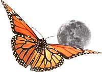
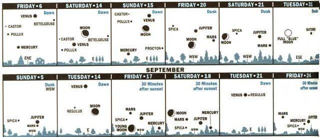
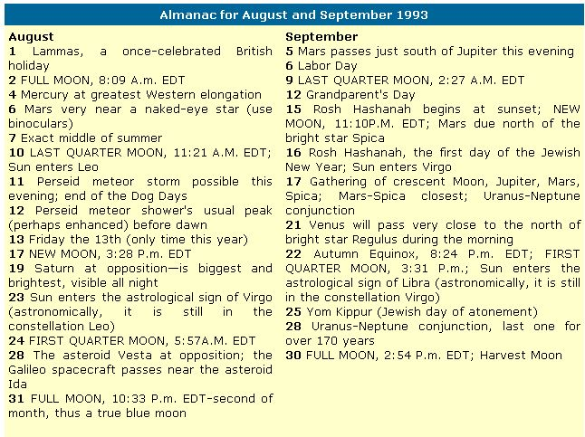

Seasons
August's blue moon is followed by migrating monarchs and a meteor shower.
Once the Dog Days are over, the rest of August and September offers us the year's finest days to be outdoors and alive. This is particularly enhanced by the beautiful, somewhat bittersweet feeling that summer is gradually being lost. Once I feel the first late-August cold front truly break the siege of summer, see the swallows begin to gather for departure, and notice the sunsets get rapidly earlier, I know that summer's golden days are numbered and that autumn's pageant of beauty and change is near at hand.
Seasons and calendar: Equinox and Blue Moon
It's during the autumn equinox that the Sun crosses the equator, making day and night everywhere of equal length. Some cultures viewed this time period as so important that they actually began and based their calendar year at or during the equinox. Such was the case of both the ancient Spartans and Macedonians-the latter's calendar becoming of widespread importance when Alexander the Great whirled out of Macedonia and conquered the "known world." The Jewish New Year, Rosh Hashanah ("head of the year"), begins with the sunset nearest the new moon t hat falls closest to the autumn equinox. As most farmers can tell you, the harvest moon is said to be the full moon closest to the autumn equinox. However, this year the full moon of August 31 will hold its own special distinction: it will be a spectacular "blue moon:"
SKY CALENDAR OF SPECIAL EVENTS FOR 1993
AUGUST
These days a blue moon is somewhat of a calendrical curiosity since the definition alters with time. Presently the blue moon is said to be the second full moon when there are two full moons in a calendar month. But there is also a phenomenon by which the Moon (or Sun) can actually appear distinctly blue in color (or sometimes green or "brass-colored"). This occurs when particles in clouds are all about the same (unusually small) size-often due to the effects of major forest fires or dusty volcanic eruptions. These particles scatter out the longer wavelengths of light, leaving alone the shorter wavelengths, which are bluer-or blue and green-in color. It was the pall of particles from Canadian forest fires, for example, that produced the amazing blue moon and Sun seen in New England and parts of the mid-Atlantic states on September 24, 1950. (I'll discuss this remarkable event in greater detail in future issues.)
Americans will be able to seek out the blue moon of August, as the Moon will be full on both August 2 and 31. Note: The eastern hemisphere will experience our August 31 moon on September 1 (their time) and their blue moon (the second of their month) on September 30. We can just fit two full moons into a 30-day-long month because the Moon's "synodic period" (the time from one phase to the next recurrence of that phase) is approximately 29 1 / 2 days. Of course, that explains why you'll never see the phenomenon in February-even on a leap year. But how often does a year have a month with the supposedly rare "once in a blue moon" blue moon? The interval between one such blue moon and the next is less than three years. Writer Guy Ottewell points out that about only one year in 19 has two months with a blue moon. The next will be 1999, when both January and March have two full moons.
Astronomy: See Seven Planets
The most exciting sky event likely to occur this season is the Perseid meteor storm. (See "Enjoy a Perseid Shower" on page 21 for discussion of this potentially stupendous event.)
Diagrams for dusk and dawn show scenes about 45 minutes after sunset or before sunrise, as viewed from 40' north latitude (approximately correct for the United States or southern Canada). "Age" of the moon is amount of time since new moon. -Adapted from Sky Calendar, Abrams Planetarium, Michigan State University, East Lansing Michigan 48824.
Besides the possible "shooting star" deluge and the interesting full moons, there are plenty of planets visible this August and September. Saturn, at its brightest, rises in the east-southeast and is visible all night long. Bright Venus and always-low Mercury are at their highest in the east before dawn (watch 45 minutes before sunup) in early August. Jupiter and Mars have a close conjunction (meeting) low in the west-southwest at dusk on September 4 to 6, and form a lovely but low grouping with the star Spica, and a lunar crescent at dusk on September 17. Have veteran observers help you glimpse the far and dim Uranus and Neptune having their last conjunctions with each other until the middle of the 22nd century.
The most cloud-free period of the year is late August to late October.
Enjoy a Perseid Shower
Chances are, just a few hours before darkness begins falling in the United States on August 11, Europe will see what may be one of the greater meteor displays in history. It's also possible that the aftermath of the shower's peak will provide quite a view for Americans, displaying hundreds of meteors per hour.
To refresh your memory, a meteor is the streak of light produced when a piece of space rock or iron enters our atmosphere at such great speed that it burns up from friction with the air. A meteor shower is an increased number of meteors appearing to come from a single spot among the constellations. And the Perseid meteor shower (from the constellation Perseus) is often the best of all annual meteors showers, producing as many as 50, 60, or sometimes more meteors for observers to see.
But this year the Earth is likely to see a super display of the Perseids. The parent comet of the meteors, Swift-Tuttle, finally returned to the inner solar system last year and on August 11 we will be passing close a to where it went late last December.
Many experts think the Earth will experience the Perseid meteor storm. In 1991, the Perseids poured over Japan at rates of 300 to 400 per hour for one hour. Last year, the Moon was full and cloudiness prevailed over the Far East, but again that part of the world was rained over by a powerful Perseid burst. There were so many meteors that bright ones were visible like flashes of lightning even through the clouds. Rates of a few thousand might have been visible in the hour of outburst if skies had been clear.
The world's leading authority on comet and meteor stream orbits, Harvard Universitys Brian Marsden, thinks the great burst will be at its best around 6:22 Pmt. EDT-approximately an hour and a half before sunset on the East Coast. Marsden also calculates that this August 11, Earth is coming closer to the orbit of the parent comet years. Yet there are records a mere thousands years ago of Perseid storms so strong that meteors "fell like snow!"
There is something U.S. viewers can do to increase their chances of catching the storm outburst if it occurs over America (or at least if a strong aftermath should oc cur). First of all, try to find a site many miles away from city light. (Be prepared to view far less if the sky is hazy that night.) On August 11, look in the northeast sky between 6 P .m. and 7 P.m. just to make sure that there aren't some day-bright Perseids zooming there. Keep your fingers crossed as darkness falls after 8 P .m. Even then, the constellation Perseus is still low in the northeast, but if the spate occurs, the sight will still be tremendous.
Weather: Clear Sides and Hurricanes
There comes a cold snap in late August or early September when I always say: "Summer's back is broken." The period from then until late October is the most cloud-free month (and longer) of the year across most of the eastern half of the United States. For much of the Southwest, June is the most cloud-free, while July is for the Pacific Northwest and northern Rockies. For nowhere in the 48 states-except southern Florida-is any month from November through May most cloud-free.
But September is not all coolness and clarity, and neither is August for that matter. These two months are the dreaded months of hurricane season. And this isn't only true for prime targets, Florida and the Gulf Coast. Hurricanes need warm water, but the oceans take longer to cool down from summer's maximum solar radiation than the atmosphere. Thus it is quite possible for spots far north of the Atlantic Coast to get hit by devastating hurricanes in September and October, and possibly even early November.
The Living World: Monarchs
Fall migrations begin in August (actually a little earlier for some species, believe it or not) and rise to a peak in September. Everywhere, birds are on the move. But it is not just birds that migrate or are capable of winging thousands of miles, sometimes across hundreds of miles of water. So, too, does one of the few members of the insect world that is adored by just about everyone-the monarch butterfly.
I can't tell you exactly when to look for the most monarchs passing by because they seem to come in different groups from August through October, and the weather and other complications mean that the size and time of the largest group may vary greatly each year. If you're lucky, you'll be near a bay or large lake where the butterflies pause to refresh themselves on the nectar of plants before attempting the perilous crossing. The most spectacular display I've ever seen in New Jersey was on October 9, when some tall cedar trees near our bay were literally covered with the beautiful, colorful creatures.
Of course, the most amazing fact is nearly all of the monarchs in the eastern United States and Canada winter in a single tiny locale in the mountains of Mexico; nearly all of those in the western United States and Canada winter in a single tiny locale in California. You can visit the "monarch trees" in Pacific Grove, California, where laws against bothering these butterflies are, happily, quite strong.
Of all the stories I've heard about them, the most moving is related by naturalist Edwin Way Teale. In Autumn Across America , Teale tells how he and his wife were driving across the Great Salt Lake Desert in Utah and were depressed by the fact that no plants, birds, reptiles, or even insects were visible-none were capable of living in that stretch of white flatness without water. Then Teale and his wife suddenly saw five spots of color flying steadily onward-five monarch butterflies were on their way home to California.
Special Day: Time for Loaf Mass
Cross-quarter days, those that occur halfway through the seasons, have all been the occasion for holidays. But not many surpass Lammas, once celebrated widely in the British Isles on August 1st.
There are two theories regarding the origin of the holiday's name. One holds that it comes from "Lamb-Mass" because the early Roman church supposedly took a lamb to the altar when commemorating St. Peter's miraculous freeing from his prison chains.
The other theory holds that the name comes from the Middle English lammasse, or"loaf mass:' August 1 was when the people of the British Isles consecrated the first bread baked from the new wheat or corn of the season. The Old English form of the holiday's name was hlaf-mass. Our word "lady" comes from the Old English hlafdig, which means something similar to "loaf dispenser" or "loaf kneader." On Lammas it was the custom in England to give money to servants to buy gloves ("Glove-Silver") and for every church to have a sheaf placed over its door.
|
 |
 |
 |